León responde al Silbido, es macho, tiene la cola corta 5cm aprox, tiene sólo un testículo visible, es tipo Mini Schnauzer gris (sal y pimienta), pesa 7kg aprox, tiene 8 años.
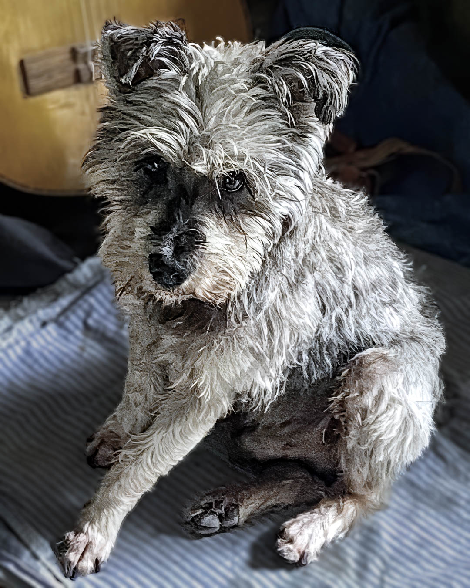
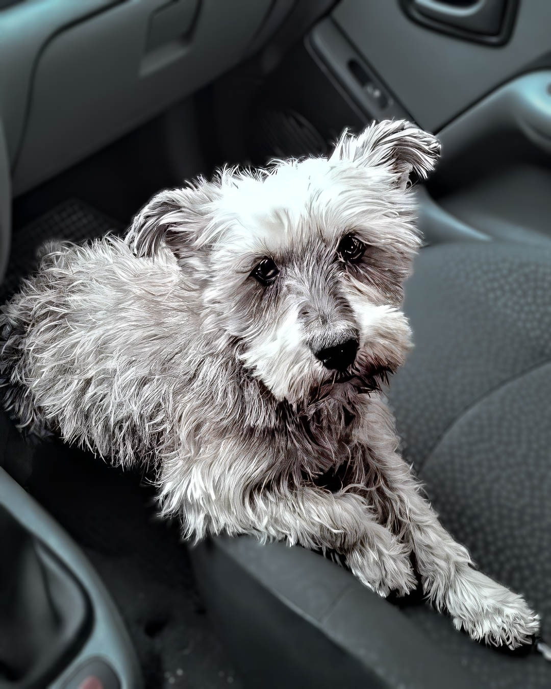
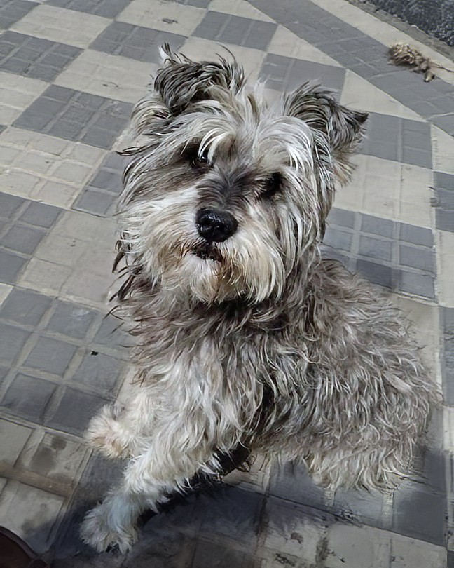
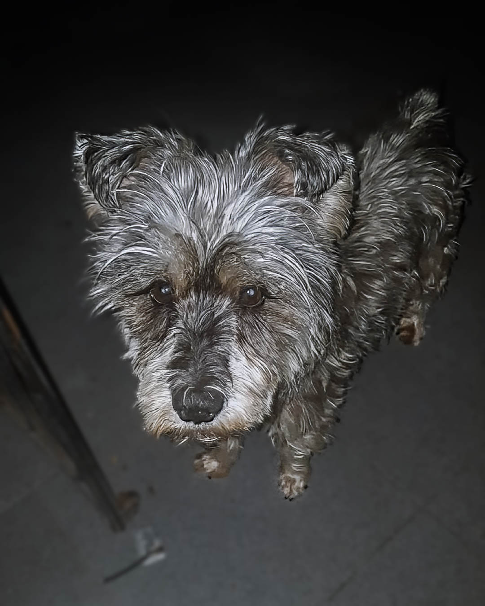
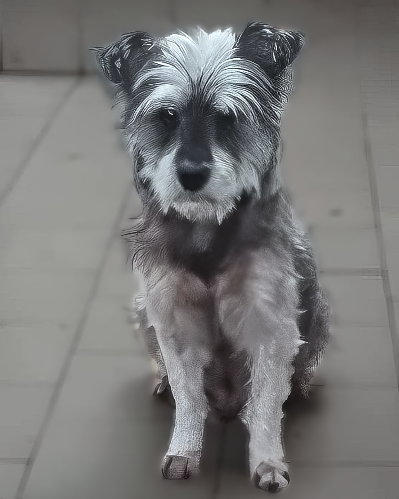
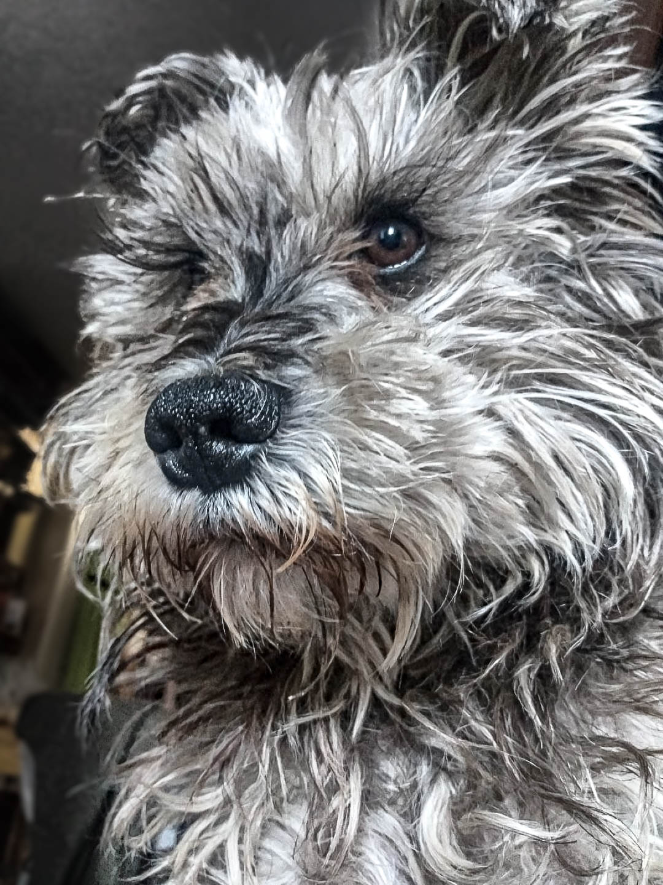
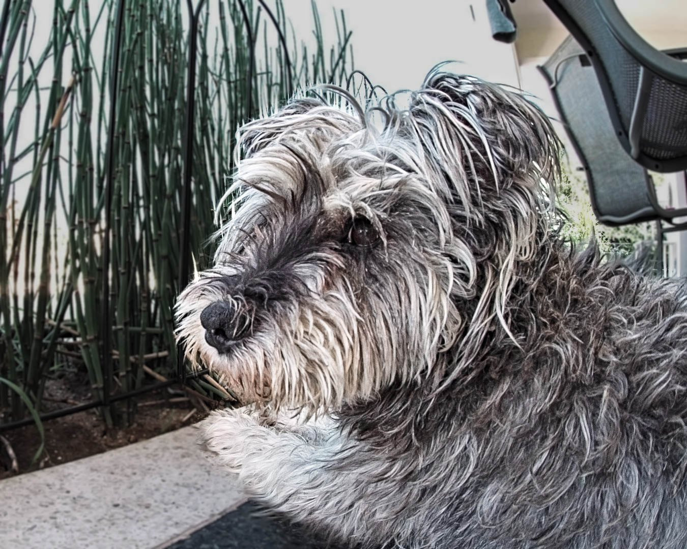
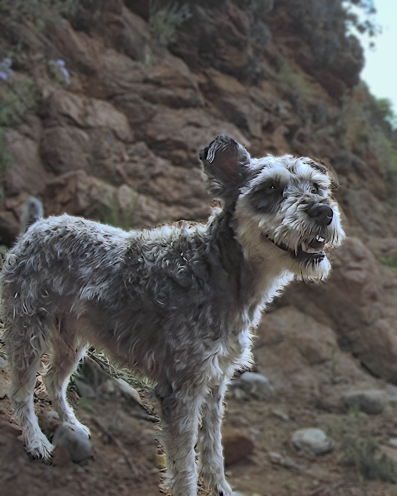
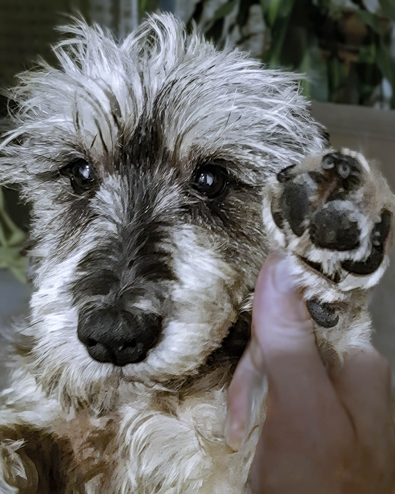
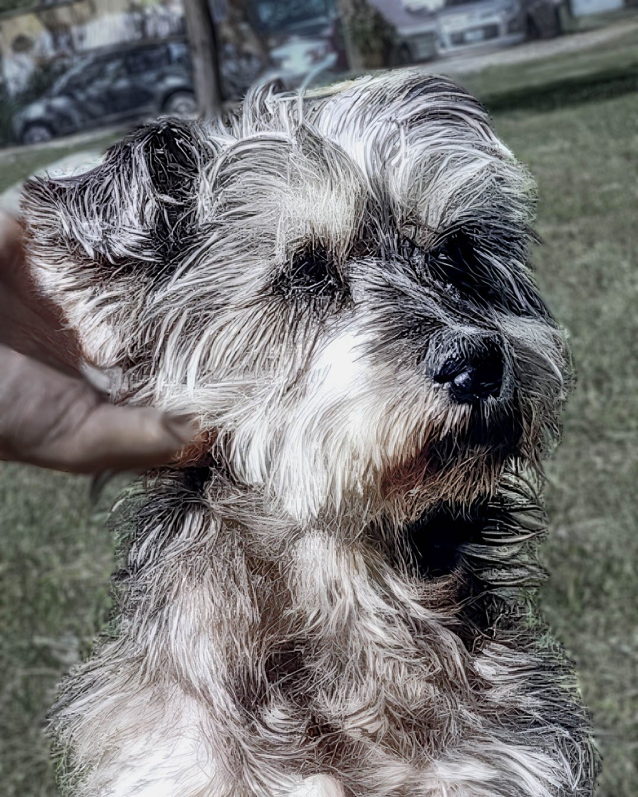
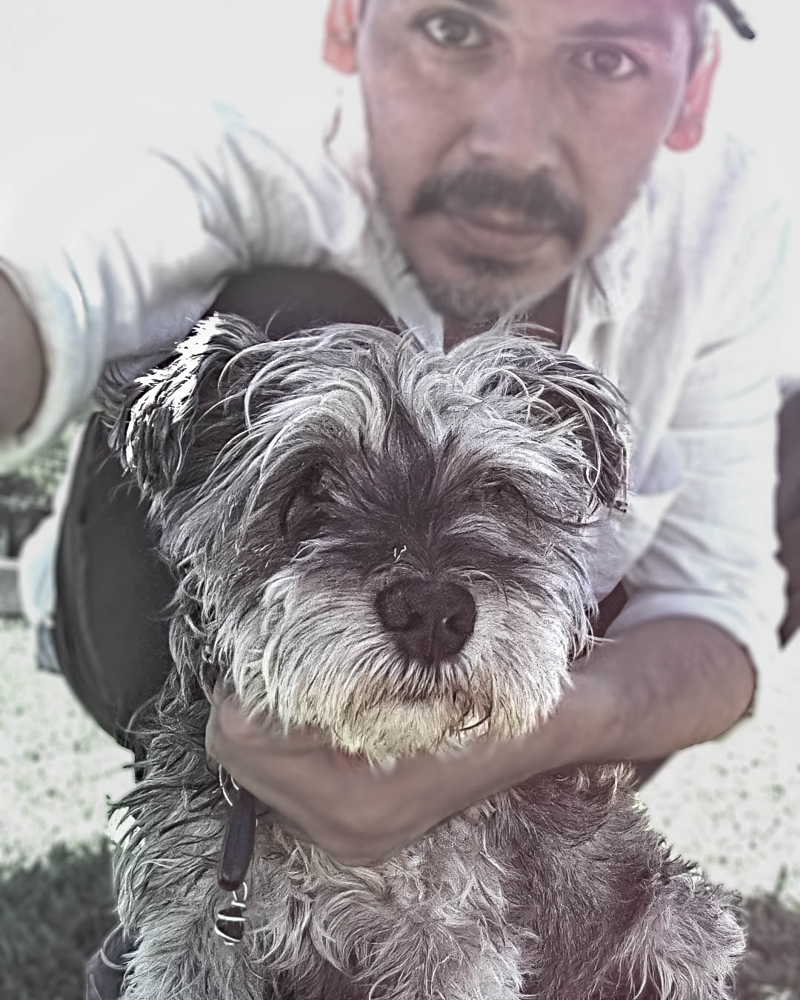
El jueves 5 de marzo, alrededor de las 19 hs, León se dirigía por Duarte Quirós, desde Sol de Mayo hacia Brown. Esa tarde no regresó a casa.
Es dócil y no muerde. Todo indica que, en ese trayecto, alguien lo alzó.
Luego de un mes de intensa búsqueda, esa es la hipótesis más probable.
Queremos destacar y agradecer la colaboración de los vecinos, que se han sumado difundiendo, pegando carteles y aportando información.
También es importante señalar que alguien retira sistemáticamente los carteles que colocamos en la zona de Duarte Quirós, entre el 2000 y el 2500.
La búsqueda ahora es de largo plazo. Tu ayuda es fundamental.
Podés compartir esta información en grupos de barrios, edificios y redes sociales.
También podés descargar y difundir los afiches, videos e imágenes, así como esta página.
Usá el hashtag #buscamosaleón para amplificar el alcance.
Si creés haber visto a León, contactanos de inmediato para poder verificarlo.
Si es posible, intentá retenerlo y registrar imágenes o video.
Reproducí el audio del silbido para comprobar si responde.
Muchas gracias por tu ayuda.
Además de todo lo anterior, aquí dejo afiches y reels compartidos en redes sociales. Con clic derecho, o manteniendo presionada la imagen, podés descargarlas.
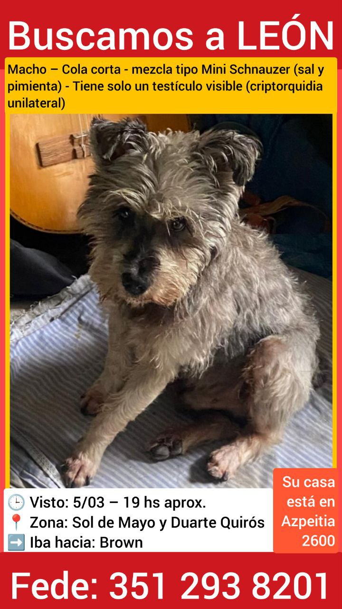